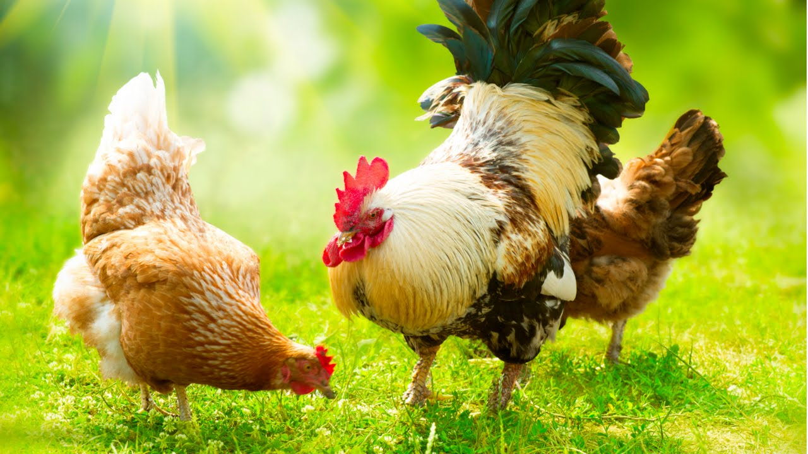
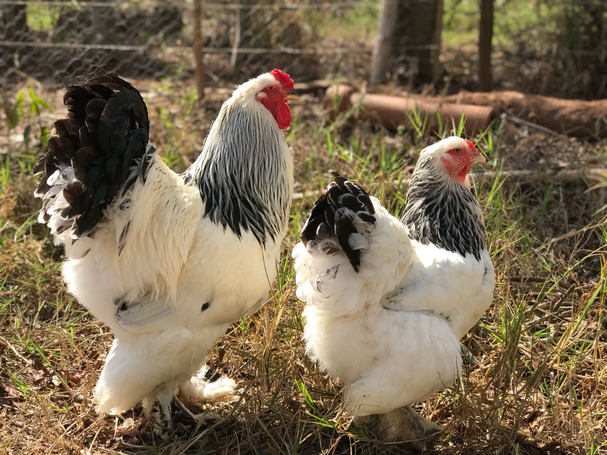
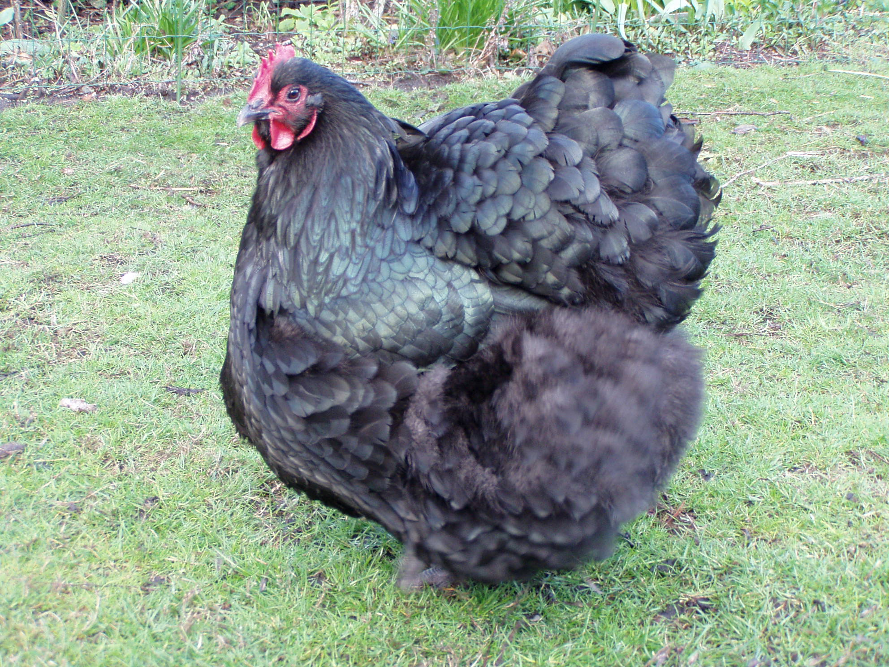
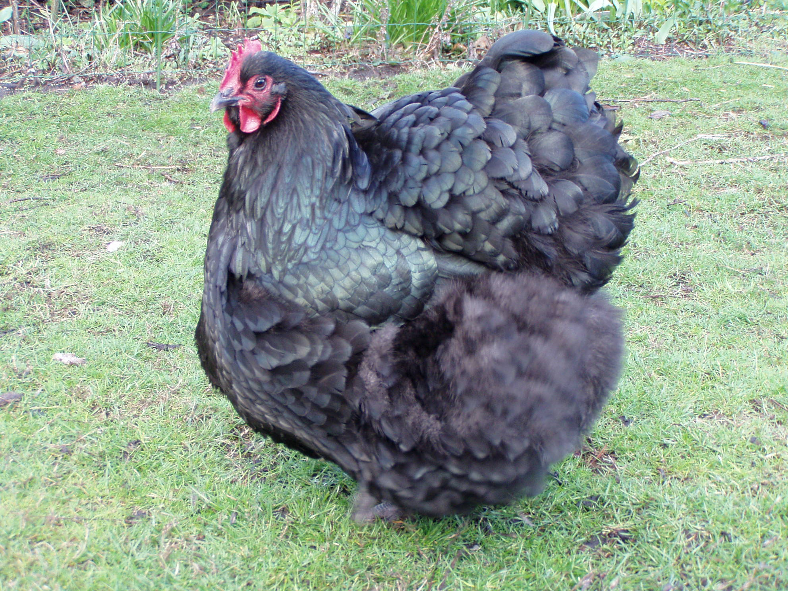
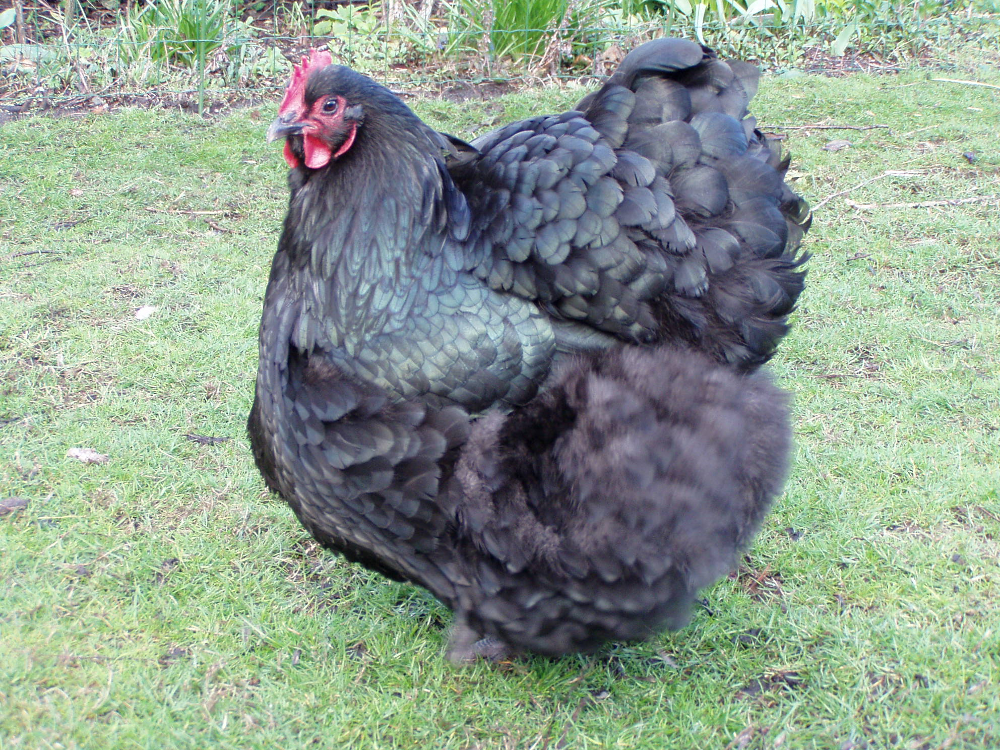
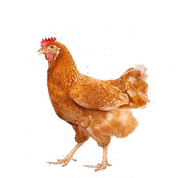
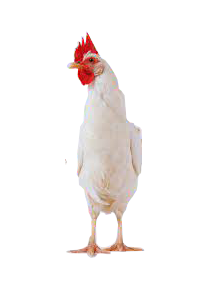

 




Temperatura correta para cada fase do Frango
Oferecendo assim uma Melhor Qualidade de Vida para seus Animais
Oferecendo assim uma Melhor Qualidade de Vida para seus Animais
Com um sensor de temperatura instalando na sua granja,
garantimos um animal mais saudavel em cada uma de suas fases.
Desde pintinhos até frangos adultos.
Você terá acesso a temperatura da sua granja 24h,
e poderá monitora-la, através do nossos software feito especialmente para sua granja.
garantimos um animal mais saudavel em cada uma de suas fases.
Desde pintinhos até frangos adultos.
Você terá acesso a temperatura da sua granja 24h,
e poderá monitora-la, através do nossos software feito especialmente para sua granja.

Fases e suas respectivas temperaturas


Adulto
Não pode permanecer em um espaço com elevadas temperaturas. Logo, o ideal é um ambiente entre 21ºC e 23ºC
Não pode permanecer em um espaço com elevadas temperaturas. Logo, o ideal é um ambiente entre 21ºC e 23ºC

Jovem
Entre 22ºC e 24ºC de temperatura, um frango Jovem precisa.
Jovem
Entre 22ºC e 24ºC de temperatura, um frango Jovem precisa.

Filhote
Nos primeiros dois dias, os filhotes necessitam de uma temperatura entre 32ºC a 31ºC
Venha fazer parte do 5chickens, e Melhore a Qualidade
e o bem estar dos seus Animais.
e o bem estar dos seus Animais.
 O melhor para suas aves
O melhor para suas aves